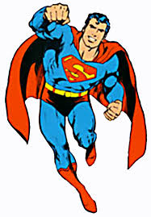

Супермен (на английски: Superman) е измислен персонаж в комиксите на ДиСи Комикс
и един от най-известните супергерои[1], възприеман за американска културна икона.
Измислен е от американския писател Джери Сийгъл и канадския художник Джо Шустър през 1932,
когато живеят в Кливлънд, Охайо. През 1938 г. двамата продават правата си на Detective Comics
(по-късно ДиСи Комикс). Супермен прави своя дебют в списанието Action Comics #1, отпечатано
през юни 1938 и впоследствие се появява в различни радиосериали, филми, комикси и видеоигри.
Успехът, с който се възприемат неговите приключения, спомага за появата на жанра за супергерои,
в който той заема централно място.
Оригиналната история на Супермен разказва, че той е роден на планетата Криптон под името Кал-Ел.
Миг преди да бъде унищожена родната му планета, неговият баща - ученият Джор-Ел -
изстрелва невръстния си син с ракета към Земята. Намерено и осиновено от фермерско
семейство в Канзас, детето е отгледано с името Кларк Кент и възпитано в здрави морални
ценности. Много скоро детето започва да показва свръхчовешки способности, които до достигане
на зрелост се научава да използва за благото на човечеството.